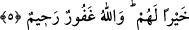

ALLAH’IN VE RASÛLÜNÜN
ÖNÜNE GEÇMEYİN
Bismillâhirrahmânirrahîm
1. Ey iman edenler! Allah’ın ve Rasûlünün önüne geçmeyin. Allah’tan korkun.
Şüphesiz Allah işitendir, bilendir.
2. Ey iman edenler! Seslerinizi Peygamber’in sesinin üstüne yükseltmeyin.
Birbirinize bağırdığınız gibi, Peygamber’e yüksek sesle bağırmayın; yoksa siz
farkına varmadan amelleriniz boşa gidiverir.
3. Allah’ın elçisinin huzurunda seslerini kısanlar, şüphesiz Allah’ın kalplerini
takvâ ile imtihan ettiği kimselerdir. Onlara mağfiret ve büyük bir mükâfat vardır.
4. (Rasûlüm!) Sana odaların arka tarafından bağıranların çoğu aklı ermez
kimselerdir.
5. Eğer onlar, sen yanlarına çıkıncaya kadar sabretselerdi, elbette kendileri için
daha iyi olurdu. Allah çok bağışlayan, çok esirgeyendir.
Söze “Ey” nidâsı ile başlanılması, burada zikrolunacak hususun kavrama ve riayet
açısından son derece dikkat, itina ve ihtimam gerektiren önemli bir iş olduğunu
muhataplara tenbih içindir. Muhatapların “iman edenler!” şeklinde tavsif edilmesi de
onları gayrete getirmek ve zikrolunacak hükme riayet etmenin imanın bir gereği, o
hükmü ihlâl etmenin ise imana aykırı bir durum olduğunu beyan etmek içindir.
“Allah’ın ve Rasûlü’nün önüne geçmeyin;” yani herhangi bir hususu onların önüne